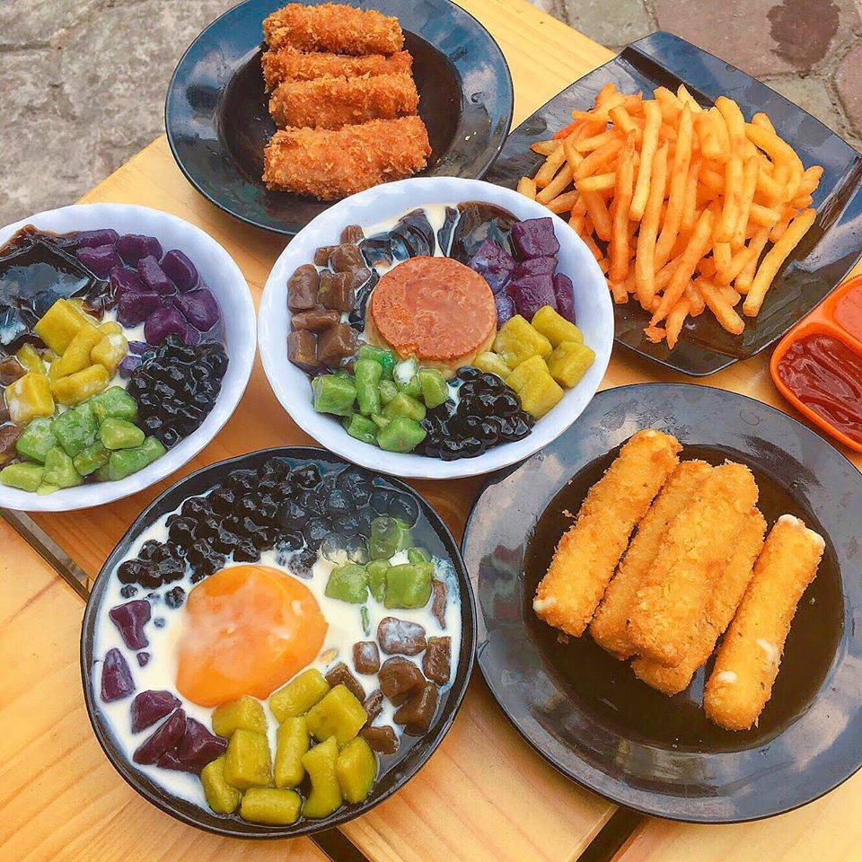
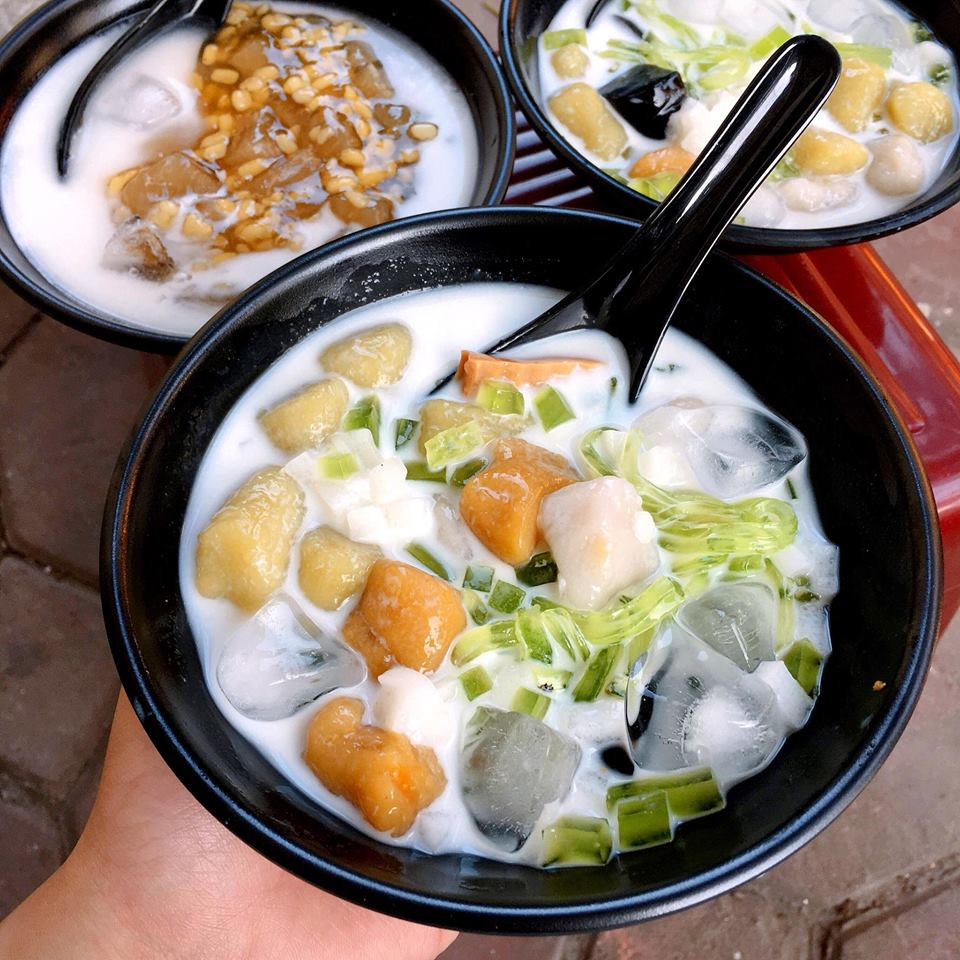
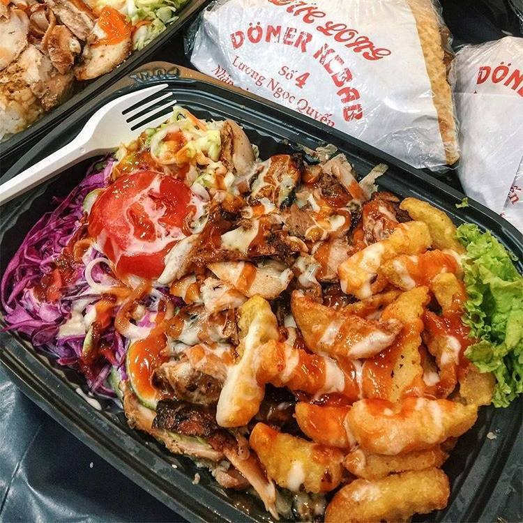
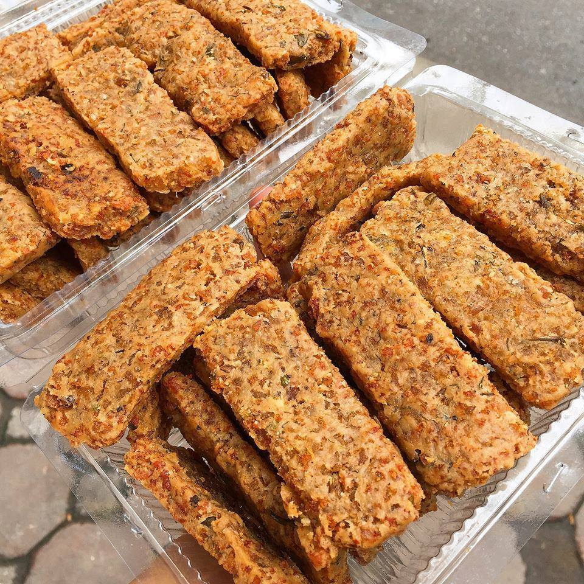
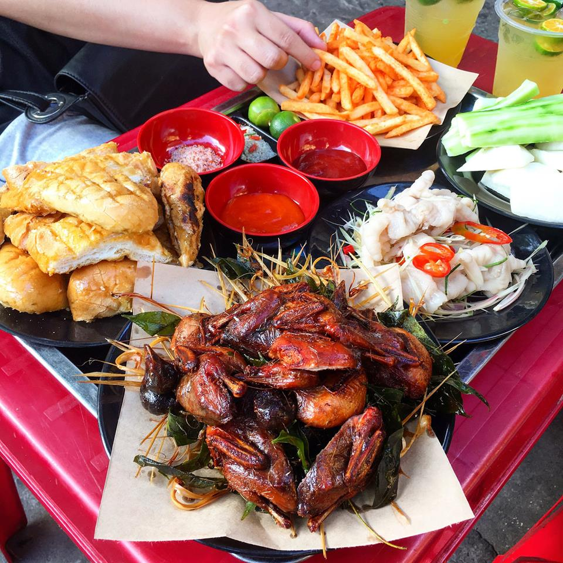
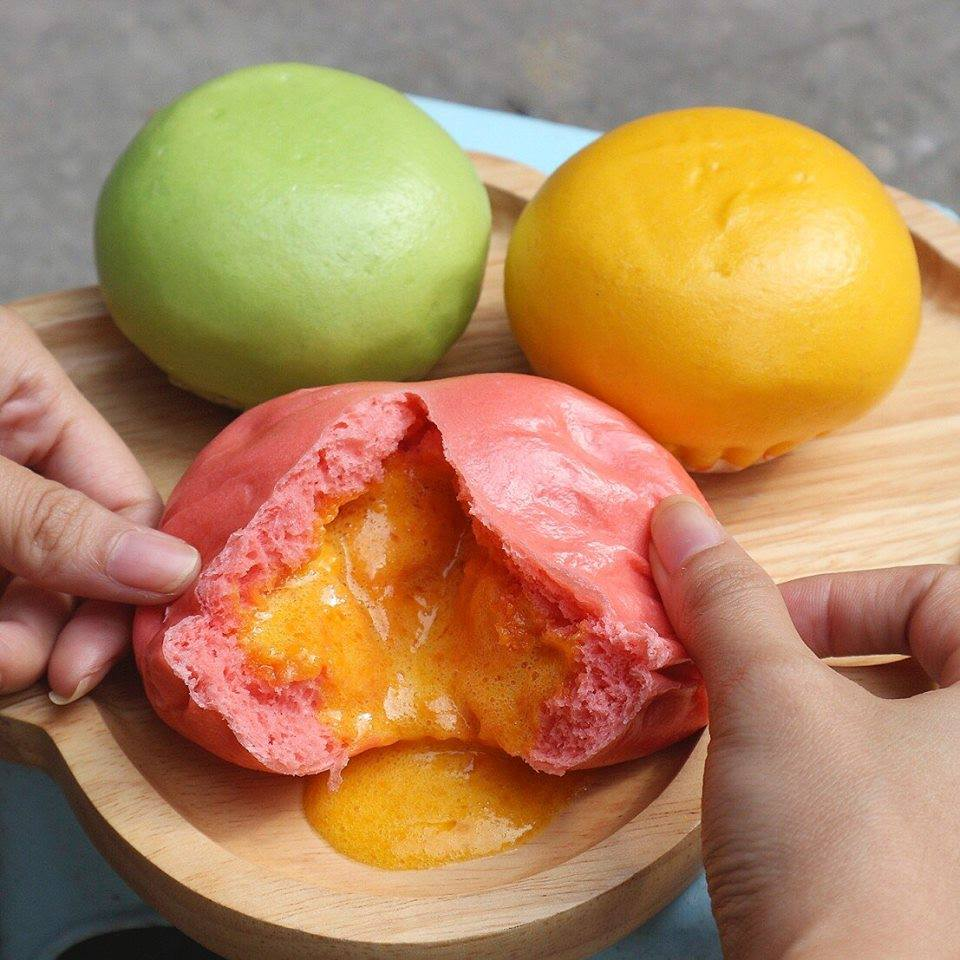

TỔNG HỢP 20 QUÁN ĂN VẶT NGON - SHIP TẬN NƠI
1. Gà bó xôi tím - Chicken Box - Hoàng Cầu, Đống Đa (093.798.3232) (319k)

2. Mẹt ăn vặt, nem lụi, bánh bột lọc, bánh mỳ nướng mật ong - Ăn Là Like - Ngõ 4 Thụy Khuê, Tây Hồ (0904.909.609)

3. Mẹt ăn vặt đủ món, thạch hoa quả, chè bơ - Funny Monkey - Số 251 & 490 Xã Đàn, Đống Đa (0988.575.038)

4. Sữa chua thạch lá nếp, sanwich gà nướng phô mai, chè bưởi, chè khoai dẻo - Số 78 Bùi Ngọc, Dương, Hai Bà Trưng (01666.202.297)

5. Trà vải, trà đào, gà khô, mỳ phô mai - Miss Homemade - Số 71A Hồng Mai, Hai Bà Trưng (0121 321 9898)

6. Sườn nướng BBQ - BBQ Deli - Hoàng Cầu, Đống Đa (096.195.46.46 / 096.197.46.46) (từ 259k)

7. Chocolate Castella, bông lan trứng muối - Tiệm Bánh 365 - E8 chung cư 181 Nguyễn Lương Bằng, Đống Đa (gần ngõ 161 Nguyễn Lương Bằng) (096.997.5599 / 096.997.2266)

8. Gà bó xôi - Chicken Box - Hoàng Cầu, Đống Đa (093.798.3232) (299k)

9. Chè khoai dẻo, lẩu tok, súp óc heo, nem chua rán - Chick Garden - Số 105 C3 Nam Đồng, Đống Đa (098 669 44 16)
10. Chè khoai dẻo, chè bưởi - Số 78 Bùi Ngọc, Dương, Hai Bà Trưng (01666.202.297)
11. Doner Kebab - Số 4 Lương Ngọc Quyến,Hoàn Kiếm (091 332 1685)
12. Xôi xoài Thái Lan - Quận Ba Đình (0903426764) (55k)

13. Tokbokki, gimbap - Số 203 Giảng Võ, Đống Đa (024 3736 7788)

14. Gà sốt cay, Gimbap - Số 22 ngõ 31 Xuân Diệu, Tây Hồ (01669629955)

15. Balsamic Chicken Salad - Số 94 Ngõ 62 Nguyễn Chí Thanh, Đống Đa (0986.281.037) (từ 69k)

16. Chả bì - Số 114 Chiến Thắng, Hà Đông (0987.331.545) (150k/kg)
17. Chim quay mắc mật, bánh mỳ mật ong - Chỗ Này Này - Số 9 Nguyễn Đình Thi, Tây Hồ (098 6699 642)
18. Gân bò dầm cóc - Số 8 ngõ Hàng Bột, Hoàn Kiếm (024.629.777.33 ) (từ 70k)

19. Bánh bao kim sa, bánh bao gà nấm - FB Đinh Thùy Anh - Số 12 lô 6 ngõ 51 Lãng Yên, Hai Bà Trưng (012.8888.0708)
20. Gà sốt/ Gà rán - Cece Box - Ngách 49 ngõ Thịnh Hào 3, Đống Đa (0967253995) (từ 30k)